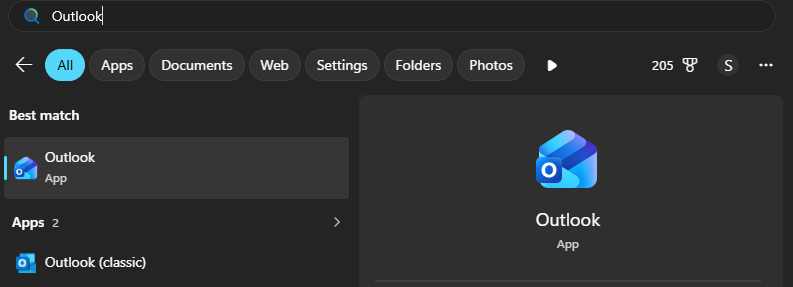
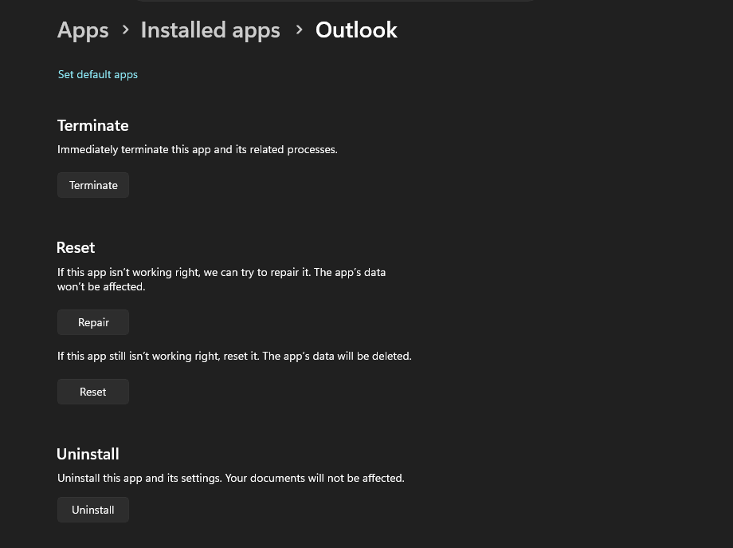
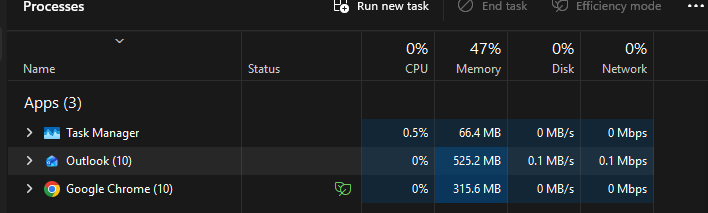
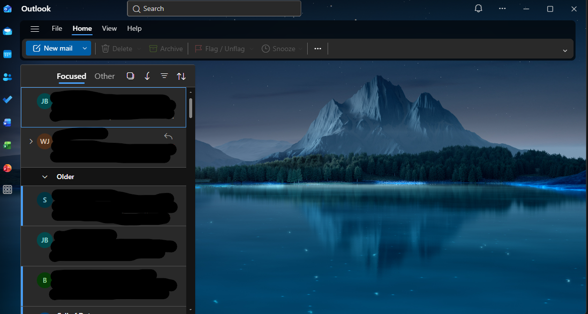
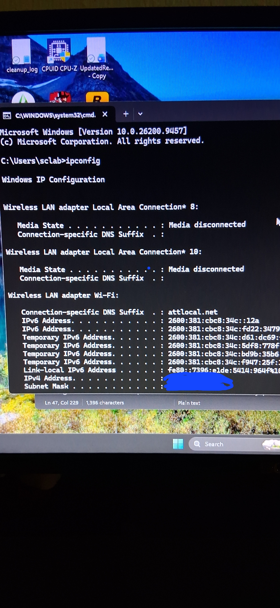
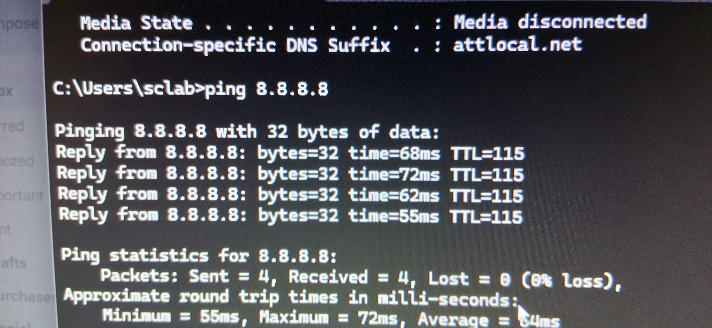
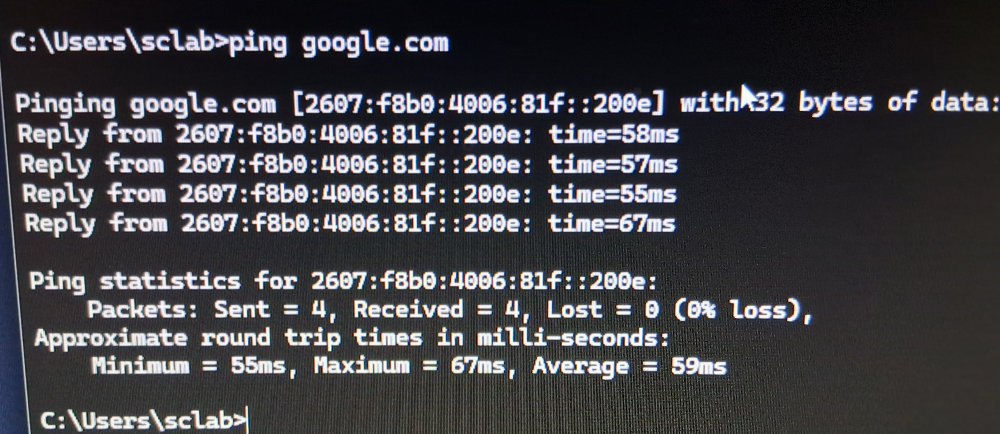
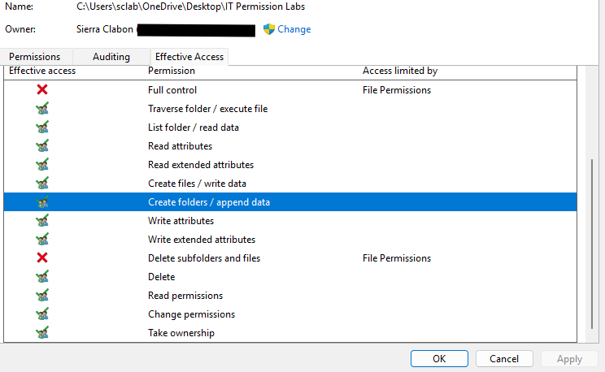

These labs demonstrate my technical learning, troubleshooting
process, and ability to document my work.
⌘
Help Desk Troubleshooting Lab
Hands-on support practice involving Windows troubleshooting,
evidence screenshots, and technical documentation.




Evidence: Outlook Opens Successfully
Help Desk
Windows
Documentation
View Project Documentation ↗
⌁
Windows Network Troubleshooting
Practice using ipconfig and ping to examine IP configuration
and troubleshoot network connectivity.

Evidence: Windows IP configuration results

Evidence: IP connectivity test

Evidence: DNS and hostname connectivity test
ipconfig
ping
Networking
View Lab ↗
▤
Windows Troubleshooting
Windows support practice focused on identifying technical
issues and recording troubleshooting steps.
Windows
Diagnostics
View Project Documentation ↗
$_
Linux Fundamentals Lab
Building familiarity with Linux commands, terminal navigation,
and basic file operations.

Evidence: Linux Fundamentals 1

Evidence: Linux Fundamentals 2

Evidence: Linux Fundamentals 3

Evidence: Linux Fundamentals 4

Evidence: Linux Fundamentals 4.2

Windows User Account & Permissions Lab
Project Overview: Completed a hands-on Windows 11 lab to inspect folder security settings and evaluate effective access for a user account.
Skills: Windows 11, File Permissions, User Accounts, Troubleshooting, Technical Documentation.
